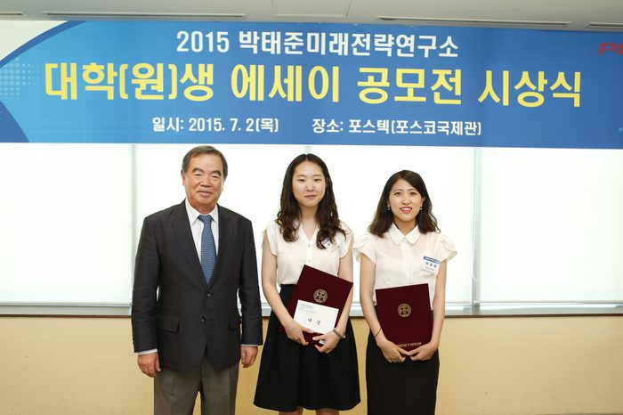

▶ 2015 공모전 주제: '10년 내에 한국사회가 당면할 가장 중요한 이슈는 무엇이며, 어떻게 대처해야 하는가?
현대 사회에서 미래를 보는 능력은 상당히 중요하다. 하루가 다르게 긴박하게 변하는 사회 속에서 주축이 되기 위해선, 앞으로 일어날 일들에 대한 통찰적 시각이 필수적이다. 그리고 여기, 타고난 호기심과 탄탄한 통찰력으로 미래에 관한 놀라운 에세이를 쓴 두 명의 이화인이 있다.
메르스(MERS)가 우리나라를 무시무시하게 뒤흔든 직후이기 때문인지, 전염병에 대한 이들의 학문적 통찰력은 더욱 놀라웠다. ‘2015 박태준 미래전략연구소 대학(원)생 에세이 공모전’ 대상 수상자 박유진(약학·11), 박윤정(약학·11) 씨를 이화투데이가 만나보았다.
수상을 축하드립니다. 소감 부탁드립니다.
박윤정 씨: 저희 둘 다 수상을 예상하지 못했기 때문에 사실 당황했어요. 생각보다 많은 인원이 참가해서 수상자 발표가 2주 뒤로 미뤄졌었어요. 그래서 ‘경쟁자가 늘어났구나, 수상은 못하겠다’고 생각했었죠. 발표 날, 홈페이지 수상자 명단에 있는 저희 이름을 유진이가 먼저 발견해서 저한테 전화했어요. 둘 다 10분동안 소리만 질렀어요.(웃음) 시상식에도 다녀왔는데 아직도 실감이 안 나요.
어떤 계기로 공모전에 참가하게 되셨는지 궁금합니다.
박유진 씨 : 제가 사람들 만나는 걸 좋아하거든요. 그래서 이것저것 찾아보다가 평소 자주 가던 공모전 사이트에서 이 공모전을 발견했어요. 논문을 내는 것도 아니고 에세이 형식이라 괜찮을 것 같더러고요. 또 팀을 선발해서 캠프를 진행한다기에 다양한 사람들을 만날 기회라고 생각했어요. 또 마침 저희가 지난 학기에 공강이 길게 비는 날이 하루 있었거든요. 윤정이랑 저랑 공강 시간이 딱 맞았는데, 둘 다 공강에 무료하게 지내는 것 같아서 공모전에 도전하게 됐어요.
박윤정 씨 : 저도 원래는 학생회 활동을 하고 있었는데 임기가 끝나니까 할 일이 없는 거예요. 삶이 너무 무료했죠.(웃음) 유진이가 제게 공모전에 참여하자고 했는데 마침 둘 다 글 쓰는 걸 좋아했어요. 참여해본다는 거 자체에 의의를 두고 시작했어요.
‘10년 내 한국 사회가 당면할 가장 중요한 이슈는 무엇이며, 어떻게 대처해야 하는가’ 라는 공모전 주제가 결코 쉽지 않은데요, 에세이를 위한 아이디어를 어떻게 얻으셨나요?
박유진 씨 : 평소에 공상을 많이 해요. 약대 오면서 받아들이는 지식이 많아서 정리할겸 공상을 많이 하는 편인데 이런 공상을 통해 아이디어를 얻었어요. 공모전 준비하면서 처음 생각했던 건 ‘기후변화’였어요. 기후가 너무 급박하게 변한다는 얘기였죠. 여기에다 열대지방의 전염병에 관한 내용을 접목시키면 어떨까 하는 생각에서 '전염병'으로 가닥이 잡혔던 것 같아요. 이 주제를 잘 발전시키면 다른 에세이들과는 차별되는 전문적인 글이 나오지 않을까 생각했어요.
‘전염병 예방 어디까지 준비했니?’라는 수상작에 대해 설명 부탁드립니다.
박윤정 씨 : 기후변화로 인해서 서서히 지구온난화가 진행되고 있고, 그로 인해 점차 아열대기후로 변해가면서 아열대지방에 있었던 전염병이 우리나라에 도래하게 됐을 때, 그에 대한 대책을 찾고자 했어요. 저희는 그 대책을 식물 백신, 식물 항체라고 생각하고 그에 대해 서술했죠.
식물 백신에 대해 설명을 드리자면, 우리는 흔히 백신을 예방접종의 형태, 즉 주사를 맞는 방식을 생각하잖아요. 그러나 가장 이상적인 백신의 형태는 먹는 백신이거든요. 주사는 맞을 때 침습적이기 때문에 받아들이기에 어려움이 있을 수 있고 고통도 따르죠. 또 동물들의 희생을 바탕으로 하게 돼요. 그러나 먹는 백신은 식물을 통해 얻기 때문에 고통도 없고, 편리하고, 대량생산도 가능하죠. 식물을 이용하기 때문에 동물의 희생이 없는 윤리적인 장점을 가지고 있어요. 이처럼 식물 백신이 전염병의 좋은 대책이라고 생각해서 주제로 선정하게 됐어요.
에세이라는 형식은 대학에서 쓰는 리포트와는 다르다고 생각하는데, 어떤 노력을 하셨나요?
박유진 씨 : 에세이는 다른 이가 내 생각을 쉽게 이해할 수 있도록 하는 글이라고 생각했어요. 저희가 쓴 주제가 어렵다면 어려운 전문적인 분야였는데, 그렇기 때문에 더욱 남들이 읽을 때 쉽게 읽힐 수 있도록 노력했어요.
박윤정 씨 : 저는 처음에 에세이를 어떻게 써야하는 지 감을 못 잡아서 검색을 해보니까 우리말로 ‘중수필’이라고 하더라고요. 수필이 원래 자기 이야기를 쓰는 거잖아요. 경수필이 아니라 중수필이니까 상대적으로 조금 더 무게를 가진 글이라고 생각해서 논문을 인용했고요. 물론 그걸 다시 쉽게 읽히는 단어로 바꾸는 작업을 했어요.
심사 기준에 ‘논리전개의 타당성’과 ‘서술의 정확성’이 있다고 하는데, 이와 관련해 특별히 세우신 원칙이 있는지 궁금합니다.
박윤정 씨 : 저희는 처음 글을 쓰기 시작할 때 각자 부분을 나눴어요. 논리 전개의 타당성은 유진이가 맡고 서술의 정확성은 제가 맡았죠.
박유진 씨 : 제가 맡았던 부분은 ‘문제 제기’였는데, 원인과 결과가 정확해야 한다고 생각했어요. 그래서 원인에 대해서 확실히 근거가 있는지 확인한 뒤 원인의 근거가 확실했을 때 글로 옮겨 적었어요.
박윤정 씨 : A와 B가 있을 때 그걸 엮어나가는 역할을 유진이가 맡고, 저는 논문을 바탕으로 사실을 검증하고 서술하는 부분을 맡았습니다.
에세이를 쓰면서 서로 의견이 대립한 적은 없었나요?
박윤정 씨 : 팀을 잘 짜야해요. 한 사람이 의견이 강하면 한 사람이 의견이 약한 사람이 있어야 하죠.(웃음) 저희의 경우엔, 유진이가 참여를 먼저 제안했기도 하고, 각자 주제를 하나씩 정해 왔는데 그 중에 유진이의 주제로 맞춘거라서 대립같은 건 없었어요.
다른 문제가 있었는데, 바로 ‘문체의 차이’였어요. 서로 파트를 나눠서 쓰다보니 생기는 문제였죠. 유진이는 글을 쉽고 재밌게 쓰는 편인데, 저는 딱딱하게 쓰는 편이거든요. 그래서 마지막에 어느 쪽에 맞출까 하다가 아무래도 에세이의 묘미는 쉽고 재미있는 글이라고 생각해서 유진이의 문체에 맞춰서 글을 수정 및 완성시켰는데, 그게 가산점이 된 것 같아요. 심사위원님들이 모두 읽기가 편했다고 말씀하셨거든요.
심사평에서도 언급됐듯 ‘전염병 예방 어디까지 준비했니?’라는 수상작은 몇 개월 뒤 우리사회의 메르스 사태를 예견하기라도 한 듯 전염병과 그 대처 방안이라는 주제를 담고 있는데요, 실제로 메르스 사태를 겪으며 어떤 것들을 느끼셨나요?
박윤정 씨 : 저희 아이디어의 시초는 ‘에볼라 백신’이었어요. 에볼라 백신이 먹는 백신 상용화의 예시거든요. 에볼라 바이러스 사태를 보며 미국도 이런 일이 일어났는데 우리나라라고 안 일어날 이유가 없다고 생각했어요. 그래서 10년 내 언젠가는 발생하지 않을까 했는데…, 저희가 제출한 그 다음날 메르스가 터진 거예요. 그래서 이게 무슨 일인가 싶었죠. 저희는 오히려 불안해했어요. 미래 예견이 아니라 일어난 일을 베껴 쓴 것처럼 비춰질까 걱정했죠. 그런데 저희가 최소 한달 반 전부터 준비를 해왔거든요, 그걸 심사위원 분들께서 알아주신 것 같아서 다행이었죠.
식물 백신이라는 대안은 굉장히 장기적인 대안이에요. 장기적으로 바라봤을 때 이런 백신을 개발해서 미리 대비하자 하는 마음으로 에세이를 썼는데, 메르스가 터지고 나니까 저희가 생각했던 것과는 다르게 단기적인 대책마저도 전혀 이루어져 있지 않아서 당황스러웠어요. 질병관리 대책을 재정립하고, 먹는 백신과 같은 장기적인 대안으로 넘어가야 한다고 생각해요.
박유진 씨 : 지금껏 발생했던 전염병들을 보면 대부분 더운 지방이 발생의 시초예요. 그래서 우리나라도 언젠간 그렇게 되지 않을까 생각했는데, 메르스 사태를 보니 그 날이 점점 앞당겨지고 있는 것 같아요. 앞으로도 언제든 메르스보다 더 강력한 질병이 한국에 올 수 있을 거라고 생각해요. 전염병들은 비슷한 패턴을 띠고 있을 것이기 때문에 아열대 지방의 질병들에 대한 연구와 백신 개발 연구에 더욱 집중해야 한다고 생각했어요.
많은 사람들이 그저 하루하루 일상을 살아가는 데 급급해 미래적 시각을 잃고 사는 경우가 대부분입니다. 미래 사회가 당면할 이슈와 문제들에 대해 미리 생각해보고 그에 대한 대처방법을 준비하는 데 도움이 될 만한 두 분만의 특별한 생각, 습관, 사회에 대한 태도 같은 것이 있을까요?
박유진 씨 : 저는 글 읽는 걸 좋아하다 보니 수업시간이 아닐 때 혹은 시간이 남을 때 핸드폰으로 생활과학면 기사를 자주 봐요. 그래서 현재 과학계가 어떻게 돌아가고 있는지에 대해 관심을 가지려고 노력하죠. 또 공강시간에 여러 종류의 책을 읽어두었던 게 논리력을 기르는 데 도움이 많이 된 것 같아요.
박윤정 씨 : 저는 현재를 열심히 사는 게 미래를 위한 가장 좋은 대책이 아닐까 생각합니다. 기회비용을 생각하며, 내가 지금 이 일을 하지 않으면 내일 어떻게 될까를 생각해보는 거죠.
두 분의 향후 진로 계획이 궁금합니다.
박유진 씨 : 오래 전부터 서울대학교 내의 국제백신연구소에서 연구를 하고 싶었지만, 학업에 매진하고 현실적 제약에 부딪히다보니 그냥 병원 약사를 할까 생각도 잠깐 했었거든요. 그런데 이번 공모전 수상을 통해 관련 연구를 좀 더 해보고 싶다는 생각이 들었어요. 제약회사나 연구소에서 연구를 하는 것에 대해 진지하게 고민 중이에요.
박윤정 씨 : 제약회사 개발부에 들어가면 보통 그 회사에서 1년 후 개발할 약, 3년 후, 5년 후, 10년 후 개발할 약의 계획을 짜는 일을 하게 돼요. 그래서 이런 개발부에 들어가려면 미래를 예측하는 능력이 필요하다고 하는데, 이번 공모전이 제가 그쪽 방향으로 진출하는 데 좋은 계기와 기회가 된 것 같아요.
[출처] 2015 박태준미래전략연구소 에세이 공모전 대상 수상자, 박유진(약학·11), 박윤정(약학·11) 씨|작성자 이화여대
